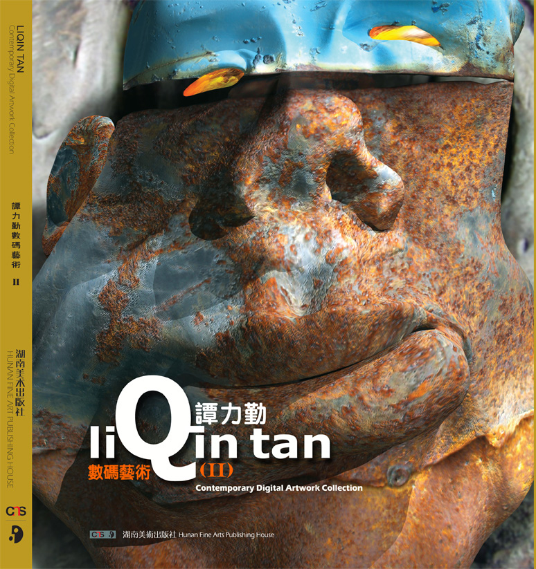

SINGULARITY ART BOOKS
2018-2019

ANIMATION INSTALLATION /动画装置
Mixed Media, 2001-2013

AIGC OIL PAINTING /AI生成油画
AIGC & Digital Printing, 2025-

AIGC ANIMATION / AI生成动画
AI Generated, 2026

AIGC OIL PAINTING /AI生成油画
AIGC & Digital Printing, 2025-

DIGITAL METAL PRINTS /金属数字打印
Mixed Media, 2001-2013

AIGC VIDEO / AI生成影像
AI Generated, 2026

RAWHIDE INSTALLATION /兽皮动画投射装置
Rawhide Projection & Prints, 2003

ANIMATION INSTALLATION /动画交互装置
Interactive Installation, 2008

EXHIBITION / 展览
Solo Show Opening, 2008
Bio / 简介

LiQin Tan / 谭力勤
Tan has portrayed his inventive and autodidactic energy as an artist, educator and researcher for five decades while teaching in China, Canada, Singapore, and the U.S.A.
Tan is a Professor of Art and former Co-Director of the Department of Visual, Media & Performing Arts at Rutgers University–Camden. He has served as an Executive Committee member of the SIGGRAPH Digital Art Committee in the United States and has chaired both the Art Gallery Senior Review and the Student Animation Review. As an early contributor to China's influential '85 Art Movement, he has played a pivotal role in bridging artistic dialogue between East and West.
With over 45 years devoted to avant-garde art and theoretical research, Tan is internationally recognized for his pioneering integration of conceptual art with digital technology. His "Digital-Primitive" interactive animation installations have received numerous international honors, including first prizes and gold medals in digital art. His large-scale solo exhibitions have toured globally, with notable presentations at the China Millennium Monument, the Shanghai Duolun Museum of Modern Art, and Beijing's 798 Gallery and Songzhuang Art Museum.
A leading figure in art futurology, Tan has for nearly two decades been an early advocate and educator in AI art, Bio Art, and VR art in both China and the United States. His research investigates the evolution of art in the age of technological singularity, spanning conceptual animation, interactive installation, animation pedagogy, and contemporary art criticism.
Tan has authored numerous academic papers and published influential books, including Singularity Art, Subversive Biological Art, and Concept and Technology, as well as the collections Numerical Natural Art and Tan LiQin Digital Art Collection II. He is currently at work on three forthcoming volumes: Art Futurology, Invisible Art, and Quantum Art.
谭力勤 / LiQin Tan
美国罗格斯大学（Rutgers University）终身正教授和前美术部共同主任，北京大学特聘专家教授。曾任美国SIGGRAPH数码艺术协会常务理事，画廊高级评审和学生动画评审主席，中国八五美术思潮重要参入者之一。
从事先锋艺术创作和理论研究四十余年。作品融后人文观念与前沿科技，创"数码原始"交互动画装置，多次获国际数字艺术头奖和金奖，美国当地媒体称他为"革命性的艺术家"。大型个展巡回世界各地，中国有中华世纪坛，上海多伦美术馆、798艺术区和宋庄美术馆等地。
科技艺术家和艺术未来学者，科技奇点艺术的倡导者和实验者，二十年多年前在中美开创了人工智能、生物设计、无介质VR艺术、4D智能打印等艺术教学研究。探索未来艺术在科技奇点和后人文主义冲击下的蜕变。其理论研究还涉及观念动画、交互动画装置、动画教育和当代艺术批评等。除几十篇学术论文外，出版未来科技艺术研究著作有：《奇点艺术》，《颠覆性的生物艺术》，《概念与技术》；画文集有：《数码自然艺术》和《谭力勤数码艺术集II》、策划出版的有《艺术未来学》、《不可视的艺术》和《量子艺术》等。
Art / 艺术
Texts / 书文
Books / Catalogues / Articles
Books / 著作

Singularity Art: How Technological Singularity Will Impact Art
The majority of this book examines the relationship between technological Singularity and art, and how this interface will change the creative force and provide a blueprint for future art expansion. The research delivers insightful predictions about the interaction of technology and art in the Singularity era.
全书共5章。第1章阐述了奇点和奇点艺术的概念、介绍了史上著名的未来艺术学家；第2章重点演绎了强弱AI艺术的未来扩展轨迹与架构；论述了技术智能将重构艺术家创造力的内涵；第3章着重预测了未来VR艺术的呈现特质与创作规律；揭示了真实艺术和VR艺术将无明确界限的未来归向；第4章：主要探求了未来纳米架构艺术创作的挑战与困境；陈述了万物纳米级结构对未来审美意识的冲击；第5章：憧憬了4D智能打印艺术在未来演变中的特殊品性；剖析了各类智能材料在4D打印艺术中的应用前景。书中附有大量未来艺术范例，丰富生动而不失严谨。

Singularity: Subversive BioArt
The book consists of four chapters along with hundreds of illustrations. Chapter 1 introduces the technological singularity and bioart concepts. Chapter 2 explores subversive bioart practices. Chapter 3 examines the ethical boundaries of bioart. Chapter 4 predicts the future evolution of bioart in the singularity era.
本书建立于世界前沿人工智能科学、未来学、生物学、人类学以及奇点学研究基础上，着重对未来生物艺术进行论证、思考和预测。

Tan On Art / Art On Tan: Selected Articles 1985-2012
Spanning three decades (1985–2012), this collection compiles 49 articles on art criticism, education, practice, and futures research. It is divided into two parts: Tan On Art—Tan's original essays—and Art On Tan—critical responses from international scholars across China, the US, Canada, and Europe.
文集跨越近三十载（1985—2012），萃集四十九篇学术文章，其研究涵盖艺术批评、艺术教育、创作实践及艺术未来学等诸领域。全书统摄为两编：上编"谭论艺术" （Tan On Art），辑录谭力勤先生之原创论著；下编"艺评谭氏" （Art On Tan），汇集中、美、加及欧洲等地国际学者关于谭氏艺术思想与创作之评论与回应，由此构成一种跨文化视野下的艺术理论对话场域。
Catalogues / 画文集

Digital Natural Art
This comprehensive catalogue documents Tan's experimental digital artworks produced between 2000 and 2005, and features critical essays by distinguished art historians, curators, and technologists from around the globe.
本画册以丰富图录详实呈现谭于2000至2005年间之实验性数字艺术创作，并邀集来自世界各地的杰出艺术史学者、策展人与技术专家撰文评述，形成多维批评视阈。

LiQin Tan Contemporary Digital Artwork Collection II
Authoritative and comprehensive, this catalogue surveys Tan's experimental digital creations and printed works from 2006 to 2012, with incisive critical essays by preeminent international art historians, curators, and technologists.
其后续卷帙，则以权威性的学术框架系统考察谭氏2006至2012年间在数字实验与印刷媒介方面的艺术实践，同时汇集国际学界领军人物——包括艺术史家、策展人与技术理论家——所撰之深邃评论，进一步拓展对谭氏创作脉络的学理认知。
Selected Articles / 论文精选
-
Tan, L. (2026). "The Ultimate Mission of Biodesign(1 & 2)." Tan's Column, "Towards Post-human Art", Art Monthly,（7), 85-91
谭力勤. 生物设计的终极使命:艺术家作为生命想象力的设计者[J]. 迈向后人类艺术专栏，画刊, 2026(6-7)，85-91
-
Tan, L. (2026). "From Human Nature to Post-biological Commonality." Tan's Column, "Towards Post-human Art", Art Monthly, (3), 91-97.
谭力勤. 从人性到后生物共性—后人类艺术的感知变量[J], 迈向后人类艺术专栏，画刊, 2026(3)，91-97
-
Tan, L. (2021). "Technological Art: The Main Trend of Future Art." Art Observation,(2), 77-84
谭力勤. 科技艺术：未来艺术的主潮？-罗格斯大学谭力勤教授专访[J], 美术观察, 2021(2): 7-84
-
Tan, L. (2026). "Humans No Longer Have Exclusive Artistic Creativity." Tan's Column, "Technological Singularity Art", Art Monthly,(7),91-97
谭力勤. 从人性到后生物共性—后人类艺术的感知变量[J], 科技奇点艺术专栏，《画刊》2026(7)，73-79
-
Tan, L. (2018). "Technological Singularity Will Transform the Art." In Proceedings of the Int'l Forum on Media & Art Shanghai University.
谭力勤. 技术奇点将重塑艺术[C]// 媒体与艺术国际论坛论文集. 上海：上海大学, 2018.
Expo / 展览
Solo / Group · 精选展览
-
2012Primitive-Level Signals: Tan's Solo Exhibition, Dalet Gallery, Philadelphia, USA.水平轴视角：谭力勤数码材料装置个展，Dalet画廊，费城，美国
-
2011Refractive Brain Therapy: Tan's Solo Exhibition, Dalet Gallery, Philadelphia, USA.折射光路：谭力勤个展，Dalet画廊，费城，美国
-
2010Refracted Brainwashing—Tan's Solo Exhibition of Digital Fine Prints & Installations, Songzhuang Art Museum, Beijing.折射光路——谭力勤数码印刷与装置个展，宋庄美术馆，北京，中国
-
2010Cold Heart/Warm Tech: Tan's Solo Exhibition, LaSalle University Art Museum, Philadelphia, USA.冷心灵/温科技：谭力勤数码装置个展，LaSalle大学美术馆，费城，美国
-
2009Digital Bloodlessness: Tan's Solo Digital Art Exhibition, Yuanfen New Media Art Space, 798 Art Zone, Beijing.数码无血：谭力勤数码艺术个展，缘分新媒体艺术中心，798艺术区，北京
-
2008Digital-Primitive: Tan's Solo Exhibition of Digital Animation Installation, China Millennium Monument Art Museum, Beijing.数码原始：谭力勤数码动画装置个展，中华世纪坛艺术馆，北京
-
2007Beijing University Library, Beijing University, Beijing.北京大学图书馆，北京大学，北京New Media Preview, Pure Project Art Space, NYC, USA.新媒体预览，Pure Project 艺术空间，纽约，美国
-
2006The Noyes Museum of Art (Joint), The Noyes Museum of Art, Oceanville, NJ, USA.Noyes 美术馆（联展），Noyes 美术馆，海洋城，新泽西，美国Art Department Gallery, California State University at Long Beach, CA, USA.美术学院画廊，加州州立大学长滩分校，加州，美国Noho Gallery, Noho Gallery, New York City, NY, USA.Noho 画廊，Noho 画廊，纽约，美国Showcase Gallery, Discover Jersey Arts, NJ State Council on the Arts, NJ, USA.展示画廊，发现泽西艺术，新泽西州艺术委员会，新泽西，美国Phantom Art Gallery, Phantom Art Gallery, Millville, NJ, USA.幻影艺术画廊，幻影艺术画廊，米尔维尔，新泽西，美国
-
2005Emin Hekimgil Art Gallery, Turkish-American Association, Turkey.Emin Hekimgil 艺术画廊，土耳其-美国文化协会，土耳其National Center for Computer Animation, Bournemouth University, UK.国家计算机动画中心，伯恩茅斯大学，英国Digital-Primitive: Retrospective, Shanghai Duolun Museum of Modern Art, Shanghai.数码原始：个人回顾展，上海多伦现代美术馆，上海Art Gallery, Tianjin Normal University, Tianjin.美术学院画廊，天津师范大学，天津OffthemapGallery, Galleries at 80, Toronto, Canada.Offthemap 画廊，80 号画廊，多伦多，加拿大Digital & Primitive, Gallery 1313, Toronto, Canada.数码与原始，1313 画廊，多伦多，加拿大Burl+4, Da Vinci Art Alliance, Philadelphia, PA, USA.Burl+4，达芬奇艺术联盟，费城，宾夕法尼亚，美国
-
2004Digital-Tribal Art, Union 237 Gallery, Philadelphia, PA, USA.数码部落艺术，Union 237 画廊，费城，宾夕法尼亚，美国Rutgers Stedman Art Gallery, Rutgers Stedman Art Gallery, NJ, USA.罗格斯大学 Stedman 美术馆，罗格斯大学 Stedman 美术馆，新泽西，美国
-
2003Drawing: Retrospective, Hopkins House Gallery, Haddon, NJ, USA.绘画回顾展，霍普金故居画廊，哈登，新泽西，美国
-
2001Digital Media Art Exhibition (Joint), Power Art Gallery, William Paterson University, Wayne, NJ, USA.数字媒体艺术展（联展），威廉·帕特森大学 Power 画廊，韦恩，新泽西，美国
-
1990Sing Tao Art Gallery, Sing Tao Art Gallery, Toronto, Canada.星岛日报画廊，星岛日报画廊，多伦多，加拿大Concordia University V.A.V. Gallery, Concordia University, Montreal, Canada.康戈迪亚大学 V.A.V 画廊，康戈迪亚大学，蒙特利尔，加拿大
-
1989Galerie La Route de La Soie, Galerie La Route de La Soie, Montreal, Canada.丝绸路艺术画廊，丝绸路艺术画廊，蒙特利尔，加拿大Place Ville-Marie, Place Ville-Marie, Montreal, Canada.Ville-Marie 大厦展览厅，Ville-Marie 大厦，蒙特利尔，加拿大
-
2025Academic Vision, Noyes Museum of Art / Arts Garage, Stockton University, NJ, USA.学术愿景，诺伊斯艺术博物馆/艺术车库，斯托克顿大学，新泽西，美国Exhibition of AIGC Oil Painting Workshop, Sichuan Academy of Fine Arts, Chongqing, China.AIGC油画工作坊汇报展，四川美术学院，重庆，中国Guangdong Int'l Art Week, Int'l Modern & Contemporary Art Exhibition & Conference, Guangdong, China.广东国际艺术周，国际现代与当代艺术展览暨研讨会，广东，中国
-
2022With Roots Deep, Foliage Thrives — A Vision of Chinese Artists in American Academia, Foster-Tanner Fine Arts Gallery, Florida A&M University, FL, USA.根深叶茂——中国艺术家在美国学术界的愿景，佛罗里达A&M大学美术馆，佛罗里达，美国
-
2018NJ Chinese Art Professor Exhibition, Princeton Gallery, NJ, USA.新州美术教授联展，普斯顿画廊，新泽西，美国
-
2016PARABIOSIS, Int'l Contemporary Art Exhibition, ChangJiang Contemporary Art Museum, Chongqing, China.异质同生，国际现代艺术展，长江当代美术馆，重庆，中国Exhibition of Chinese-American Art Faculty, Guiyang, China.全美华人美术教授联展，贵州民族大学，贵阳，中国
-
2015IV 2015, 19th Int'l Conference of Information & Visualization, University of Barcelona, Spain.IV2015，西班牙第十九届国际图形与信息大会数码艺术展，巴塞罗那大学，西班牙Across the Divide — International Art Education Exhibition, Beijing Normal University, Beijing, China.超越界限——国际艺术教育展，北京师范大学，北京，中国Sichuan International Contemporary Art Exhibition, Sichuan, China.四川国际当代艺术展，四川，中国
-
2014IV 2014, 18th Int'l Conference of Information & Visualization, University of Paris, France.IV2014，法国第十八届国际图形与信息大会数码艺术展，巴黎大学，法国XinJiang Biennial of Contemporary Art, Urumqi, Xinjiang, China.新疆当代艺术双年展，乌鲁木齐，新疆，中国
-
2013Analogue Is the New Media, Online Exhibition, DAC-SIGGRAPH.新媒体对话，SIGGRAPH数字艺术委员会，网联展iDEAs Exhibition, 13th Intl' Digital Media & Arts Conference, Laguna, CA, USA.iDEAs，美国加州第十三届国际数码艺术展，拉古纳，加州，美国
-
2012Visual Art Center, University of Texas at Austin, TX, USA.视觉艺术中心联展，德州大学奥斯汀分校，德克萨斯，美国Inter-Mediate: Contemporary Chinese American Artist, Art Gallery, the College of New Jersey, NJ, USA.多媒体联展，新泽西学院画廊，新泽西，美国Routes — The Spiritual Odyssey of Chinese American Artists, Film Premiere, Asian Society Museum, NYC, USA.Routes——美籍华裔艺术家的精神奥德赛，电影首映，亚洲协会博物馆，纽约，美国Routes — The Power to Imagine & Create, Travelling Art Exhibition, Ivymax, San Francisco, CA, USA.Routes——想象与创造的力量，巡回展，Ivymax，旧金山，加州，美国Routes — The Power to Imagine & Create, Travelling Art Exhibition, World Journal Hall, Los Angeles, CA, USA.Routes——想象与创造的力量，巡回展，世界日报大厅，洛杉矶，加州，美国Routes — The Power to Imagine & Create, Travelling Art Exhibition, Flushing Town Hall, NYC, USA.Routes——想象与创造的力量，巡回展，法拉盛市政厅，纽约，美国
-
2011Across the Divide, Crossman Gallery, University of Wisconsin-Whitewater, WI, USA.超越界限，威斯康星大学白水分校 Crossman 画廊，威斯康星，美国Effacing Boundaries, Stedman Art Gallery, Rutgers University, NJ, USA.消除边界，罗格斯大学 Stedman 美术馆，新泽西，美国Born Digital — New Materialities, Grays School of Art, Robert Gordon University, Scotland, UK.数码印制作品展，罗伯特戈登大学 Grays 艺术学院，苏格兰，英国Museum of Digital Fine Art (Online).数码艺术美术馆，网联展
-
2010Art Beijing 2010, Contemporary Art Fair, Beijing, China.艺术北京博览会，当代艺术展，北京，中国Rutgers-Camden Art Faculty Show, 3rd Street Art Gallery, Philadelphia, PA, USA.罗格斯大学美术系教授作品联展，3rd Street 画廊，费城，宾夕法尼亚，美国
-
2009Ball University Museum of Art, 7th iDEAs Exhibition, Ball University, IN, USA.第七届国际数码艺术展，鲍尔大学美术馆，印第安纳，美国Art Gallery, SIGGRAPH Asia, Yokohama, Japan.亚洲 SIGGRAPH，横滨，日本'85 Trends in Hunan and Hubei, Guangdong Art Museum (Invited), Guangzhou, China.两湖潮流——湖南湖北当代艺术展（邀请展），广东美术馆，广州，中国5th Song Zhuang Art Festival, Songzhuang, Beijing, China.第五届宋庄艺术节，宋庄，北京，中国Rupert Ravens Contemporary, Rupert Ravens Contemporary, Newark, NJ, USA.Rupert Ravens 当代艺术展，Rupert Ravens 当代画廊，纽瓦克，新泽西，美国2nd Digital Age Visual Revolution Forum, SZ Art Center, Beijing 798, Beijing, China.第二届数字时代视觉革命论坛，798 圣之空间，北京，中国Art-Hangzhou 2009: International Digital Art Exhibition (Invited), Hangzhou, China.艺术杭州2009国际数字艺术邀请展，杭州，中国Malaysia Art Fair 2009: China Digital Art Exhibition (Invited), Malaysia.马来西亚艺博会中国数字艺术邀请展，马来西亚Digital Art Gallery, 13rd Int'l Conference of Information & Visualization, Barcelona, Spain.第十三届国际图形与信息大会数码艺术展，巴塞罗那，西班牙Digital Art Gallery, 6th Int'l Conference of CGIV, Tianjin, China.第六届国际CG大会数码艺术展，天津，中国30 Years of Hunan Contemporary Art, SZ Art Center, Beijing 798, Beijing, China.湖南当代艺术三十年，798 圣之空间，北京，中国
-
2008Moscow Wizavoad Int'l Festival of Animation & Media Art (Invited), Moscow, Russia.莫斯科 Winzavod 国际动画与媒体艺术邀请展，莫斯科，俄国Peking University Library, Media Art Exhibition, Peking University, Beijing, China.北京大学图书馆数字艺术系联展，北京大学，北京，中国Across the Divide, Savannah College of Art and Design, GA, USA.超越界限联展，Savannah 美术学院，乔治亚，美国
-
20075th iDEAs Exhibition, Intl' Digital Media & Arts Conference, Philadelphia, PA, USA.第五届国际数码艺术展，费城，宾夕法尼亚，美国Prix Ars Electronica, Linz, Austria.奥地利电子艺术大赛，林茨，奥地利Mariana Gallery, Computer Graphic Exhibition, University of Northern Colorado, NC, USA.电脑艺术联展，北科罗拉多大学，科罗拉多，美国Digital Art Gallery, IV 11th Int'l Conference of Information & Visualization, Zurich, Switzerland.第十一届国际图形与信息大会数码艺术展，苏黎世，瑞士Digital Art Gallery, 4th Int'l Conference of CGIV, Bangkok, Thailand.第四届国际CG大会数码艺术展，曼谷，泰国Perkins Center for the Art, Perkins Center for the Art, Collingwood, NJ, USA.Perkins 艺术中心，Perkins 艺术中心，科林伍德，新泽西，美国Int'l Electronics Alive IV, Scarfone/Hartley Gallery, University of Tampa (Invited), FL, USA.第四届国际数码艺术邀请展，Tampa 大学 Scarfone/Hartley 画廊，佛罗里达，美国Going Global — Breaking Boundaries, St. Asaph Gallery, Philadelphia, PA, USA.超越界限联展，圣奥沙夫画廊，费城，宾夕法尼亚，美国Filed Manual, Hopkins House Gallery, Haddon, NJ, USA.霍普金画廊联展，霍普金故居画廊，哈登，新泽西，美国
-
2006The Modern Art Museum of Fort Worth, Texelectronica06, Fort Worth, TX, USA.国际数码艺术展，Fort Worth 当代美术馆，德克萨斯，美国4th iDEAs Exhibition, Intl' Digital Media & Arts Conference, San Diego, OH, USA.第四届国际数码媒体艺术大会数码艺术展，圣地亚哥，俄亥俄，美国Going Global, Da Vinci Art Alliance, Philadelphia, PA, USA.亚洲美术教授联展，达芬奇艺术联盟，费城，宾夕法尼亚，美国Myth, Religion & Art, Gallery at St. Asaph's, Bala Cynwyd, PA, USA.神话、宗教与艺术，St. Asaph 画廊，宾夕法尼亚，美国Art Gallery, SIGGRAPH 2006, Boston, MA, USA.SIGGRAPH 数码艺术画廊，波士顿，马萨诸塞，美国Across the Divide, Chinese Art Professors in USA, Lycoming College, PA, USA.超越界限——中国美术教授联展，Lycoming 学院，宾夕法尼亚，美国Myth, Religion & Art, Da Vinci Art Alliance, Philadelphia, PA, USA.神话、宗教与艺术，达芬奇艺术联盟，费城，宾夕法尼亚，美国3rd iDEAa Exhibition, Intl' Digital Media & Arts Conference, Oxford, OH, USA.第三届国际数码媒体艺术大会数码艺术展，牛津，俄亥俄，美国5th Annual Digital Art and Computer Animation Juried Competition, Beecher Center for Art and Technology, Butler Institute of American Art, OH, USA.第五届数码艺术和电脑动画大赛，Beecher 艺术与科技中心，Butler 美国艺术馆，俄亥俄，美国Digital Art Gallery, 10th Int'l Conference of Information & Visualization, London, UK.第十届国际图形与信息大会数码艺术展，伦敦，英国Da Vinci at Bartram's Garden, Da Vinci Art Alliance, Philadelphia, PA, USA.达芬奇艺术联盟展，达芬奇艺术联盟，费城，宾夕法尼亚，美国Noho Gallery, Noho Gallery, New York City, NY, USA.Noho 画廊，Noho 画廊，纽约，美国
-
2005Members' Exhibition, Da Vinci Art Alliance, Philadelphia, PA, USA.达芬奇艺术联盟年展，达芬奇艺术联盟，费城，宾夕法尼亚，美国NOVA Exhibition, Perkins Center for the Arts, Collingswood, NJ, USA.NOVA 展览，Perkins 艺术中心，科林伍德，新泽西，美国From Generation to Generation, Markheim Art Center, NJ, USA.代代相传，Markeim 艺术中心，新泽西，美国Art Gallery, SIGGRAPH 2005, Los Angeles, CA, USA.SIGGRAPH 数码艺术画廊，洛杉矶，加州，美国Int'l Digital Award Winners' Show, Los Angeles Center for Digital Art, CA, USA.国际数码艺术获奖者联展，洛杉矶国际数码艺术中心，加州，美国Digital Art Gallery, 9th Int'l Conference of Information & Visualization, London, UK.第九届国际图形与信息大会数码艺术展，伦敦，英国Art Gallery, Int'l Conference of Computer Graphics, Imaging & Vision, Beijing, China.国际电脑图像大会数码艺术画廊，北京，中国Digital Gallery, Patterns in Nature, Art+Math=X Conference, University of Colorado-Boulder, CO, USA.国际艺术+数学大会数码艺术画廊，科罗拉多大学博尔德分校，科罗拉多，美国Noho Gallery, Noho Gallery, New York City, NY, USA.Noho 画廊，Noho 画廊，纽约，美国Biennial, Noyes Museum of Art, Oceanville, NJ, USA.双年展，Noyes 美术馆，海洋城，新泽西，美国7th Annual Arts and Business Summit, Enterprise Center at Burlington County College, NJ, USA.第七届艺术与商业峰会，伯灵顿郡学院企业中心，新泽西，美国LBI Invitational Art Exhibition, Long Beach Island Art Center, NJ, USA.长海滩岛十人邀请画展，长海滩岛艺术中心，新泽西，美国Award Winning Artists Group Show, Gallery Int'l, Baltimore, MD, USA.全国获奖艺术家联展，国际画廊，巴尔的摩，马里兰，美国iDEAa Exhibition, Intl' Digital Media & Arts Conference, Orlando, FL, USA.国际数码媒体艺术大会数码艺术展，奥兰多，佛罗里达，美国Diversite de l'art Contemporain, Paris, France.多元现代艺术展，巴黎，法国Asian Fusion 2005, Asian Cultural Center, NYC, USA.亚洲美术展，亚洲文化中心，纽约，美国
-
2004Int'l Digital Art Competition, Los Angeles Center for Digital Art, CA, USA.国际数码艺术大赛，洛杉矶国际数码艺术中心，加州，美国Global Int'l Competition, Gallery Int'l, Baltimore, MD, USA.全球国际艺术大赛，国际画廊，巴尔的摩，马里兰，美国Los Angeles Center for Digital Art, Los Angeles Center for Digital Art, CA, USA.洛杉矶国际数码艺术中心联展，洛杉矶国际数码艺术中心，加州，美国National Juried Contemporary Prints Exhibition, Lancaster Museum of Art, PA, USA.全国现代印制作品展，兰卡斯特美术馆，宾夕法尼亚，美国Annual Members' Exhibition, Da Vinci Art Alliance, Philadelphia, PA, USA.达芬奇艺术联盟年展，达芬奇艺术联盟，费城，宾夕法尼亚，美国Digital Art Gallery, 8th Intl. Conference Information & Visualization, London, UK.第八届国际图形与信息大会数码艺术展，伦敦，英国Int'l Digital IV, Period Gallery, Lincoln, NE, USA.国际数码艺术展，时代画廊，林肯，内布拉斯加，美国iDEAa Exhibition, Int'l Digital Media & Arts Conference, Orlando, FL, USA.国际数码媒体艺术大会数码艺术展，奥兰多，佛罗里达，美国
-
200314th New Jersey Small Works Show, School of Art, Old Church Cultural Center, NJ, USA.第14届新泽西小型作品展，老教堂文化中心艺术学院，新泽西，美国Photographic Processes IV Exhibition, Period Gallery, Omaha, NE, USA.第四届国际摄影制作效果展，时代画廊，奥马哈，内布拉斯加，美国
-
200210th Annual Juried Watercolor Exhibition, Hopkins House Gallery, Haddon, NJ, USA.第十届水彩联展，霍普金故居画廊，哈登，新泽西，美国Re-Figured Juried National Exhibition, South Shore Art Center, Cohasset, MA, USA.全国人物画展，南岸艺术中心，科哈塞特，马萨诸塞，美国Three Rivers Arts Festival Juried Visual Arts Exhibition, Pittsburgh, PA, USA.三河艺术节全国现代美术展，匹兹堡，宾夕法尼亚，美国Contemporary IV Int'l Juried Art Exhibition, Period Gallery, Omaha, NE, USA.第四届国际当代美术展，时代画廊，奥马哈，内布拉斯加，美国
-
2001Singapore Animators Connection Conference, Singapore Art Museum, Singapore.动画家联展，新加坡美术馆，新加坡The Artist's Magazine's 2001 Art Competition, Cincinnati, OH, USA.全国美术大赛，辛辛那提，俄亥俄，美国Juried Water Color Exhibition, Hopkins House Gallery, Haddon, NJ, USA.水彩联展，霍普金故居画廊，哈登，新泽西，美国
-
2000Digital Art Gallery, 3Dcafe.com (Online).数码艺术画廊，3Dcafe.com，网联展
-
1992Montreal's 350th Anniversary Celebrations, Maisons de la Culture, Montreal, Canada.蒙特利尔市350年庆美展，文化馆，蒙特利尔，加拿大
-
1991Goya to Beijing, Vancouver Art Gallery, Vancouver, Canada.戈雅到北京，温哥华美术馆，温哥华，加拿大
-
1990Goya to Beijing, Montreal Art Center, Montreal, Canada.戈雅到北京，蒙特利尔现代艺术中心，蒙特利尔，加拿大Asian Art Exhibition, University of Montreal Asia Study Center, Montreal, Canada.亚洲美展，蒙特利尔大学亚洲研究中心，蒙特利尔，加拿大
-
1989Galerie D'Art Chinois Enc, Galerie D'Art Chinois Enc, Montreal, Canada.汉华美术中心画廊，汉华美术中心画廊，蒙特利尔，加拿大
-
1988Festival of Confucius of Montreal, Montreal, Canada.孔子文化节，蒙特利尔，加拿大
-
1987Concordia University V.A.V. Gallery, Concordia University, Montreal, Canada.康戈迪亚大学 V.A.V 画廊学生作品美展，康戈迪亚大学，蒙特利尔，加拿大
-
1986National Traveling Exhibition of '85 New Art Trends, China.八五美术新潮全国巡回展，中国
-
1985'85 Hunan Art Exhibition, Hunan Province Exhibition Hall, Changsha, China.湖南省展览馆获奖作品展，湖南省展览馆，长沙，中国
-
1984N.A.E. Award Winners' Exhibition, National Art Museum of China, Beijing, China.全国美展获奖作品展，中国美术馆，北京，中国6th National Art Exhibition, Jiangsu Art Museum, Nanjing, China.第六届全国美展（国画部分），江苏美术馆，南京，中国
-
1983Painting Competition, Central Academy of Fine Arts, Beijing, China.学生作品比赛展，中央美术学院，北京，中国
-
1982Hunan Minority Nation Art Show, Changsha, China.湖南少数民族作品展，长沙，中国
-
1981Hengyang Teachers' College Art Show, Hengyang, China.衡阳师范学院美术展，衡阳，中国Hunan Art Exhibition, Hunan Province Exhibition Hall, Changsha, China.湖南省美术展，湖南省展览馆，长沙，中国Hengyang Art Exhibition, Hengyang Exhibition Place, China.衡阳市美术展，衡阳展览馆，中国
-
1980National Drawing Traveling Show from Normal University/College Students, China.全国师范院校学生素描巡回展，中国Hengyang Chinese Painting Exhibition, Hengyang Exhibition Place, China.衡阳市国画展，衡阳展览馆，中国Hengyang Teachers' College Art Exhibition, Henyang Workers' Place, China.衡阳师范学院美术展，衡阳工人文化宫，中国
-
1979Annually Art Review Exhibition, Hengyang Teachers' College, Hengyang, China.年度美术作品展，衡阳师范学院，衡阳，中国
-
1978Sketching Drawing Exhibition, Hengyang City Iron-Way Workers' Place, Hengyang, China.素描速写展，衡阳铁路工人文化宫，衡阳，中国
-
1976Propagate Art Selection, Hengdong County Culture Place, Hengdong, China.宣传美术作品展，衡东县文化馆，衡东，中国
Acad / 研讨
-
2025Technology x Art x Business Forum, Beijing Institute of Fashion Technology, Beijing.科技 x 艺术 x 商业论坛，北京服装学院，北京
-
20249th World Chinese Arts Education Symposium, Henan University, Kaifeng.第九届世界华人艺术教育研讨会，河南大学，开封
-
2024SMART Art Education Forum, Henan Normal University, Xinxiang.创意·综合·生态——人工智能时代的美术论坛，河南师范大学，新乡
-
20221st Int'l Congress and Exhibition on Art and Design Research, CSSIET, Turkey.第一届 ICSSIET 艺术国际与设计学术大会，CSSIET，土耳其
-
2022Int'l Art Theory Seminar Academic Forum: Art & the Future of Humanity, Communication University of China, Beijing.国际艺术理论研讨学术论坛：艺术与人类的未来，中国传媒大学，北京
-
2022Art and Scenes Salon, The Center of Jiangsu Art and Scenes, Nanjing.艺术与科学论坛，江苏省艺术与科学中心，南京
-
20211st Int'l Academic Forum on Arts & Sciences, Beijing Technology & Business University, Beijing.第一届国际艺术与科学学术论坛，北京工商大学，北京
-
2020"On The Intelligent Expansion of Bionic Design," 1st CCBOT, Dalian University, Dalian.第一届国际仿生与科技学术研讨会，大连大学，大连
-
2019Digital Humanities & Cultural Innovation Symposium, Shenzhen University, Shenzhen.文化科技创新论坛，深圳大学，深圳
-
2019Forum on Cross-Border Integration of Art & Design, Dalian.艺术设计跨界融合论坛，大连
-
2018Forum on A.I. Transforms Art & Creativity, Guangzhou Academy of Fine Arts, Guangzhou.AI 重塑艺术与创造力论坛，广州美术学院，广州
-
2018Annual Educational Conference of Guangdong College Art & Design, Zhangzhou.广东高校美术与设计教育年会，漳州
-
20179th International Animation Copyright Fair, Dongguan.中国第九届国际动画版权大会，东莞
-
20171st International Animation Education Conference, Guangzhou.广州美院首届国际动画教育大会，广州
-
2016Dalian Design Festival, Tech-Art Innovation Exhibition of China, Dalian.中国海创周：大连设计节艺术与科技展，大连
-
2015Symposium of Games Design & Engine Development, Peking University (Shenzhen), Shenzhen.游戏设计与引擎开发研讨会，北京大学（深圳），深圳
-
2014Animation & Digital Media Education Conference, Beijing.动画与数字媒体教育研讨会，北京
-
2013International Singularity Art Symposium, Beijing.国际奇点艺术讨论会，北京
-
20094th Int'l DMAMH Conference, Qingdao.第四届 DMAMH 国际会议，青岛
-
20092nd Digital Age Visual Revolution Forum, SZ Art Center, 798 Art District, Beijing.第二届数字时代视觉革命论坛，798 圣之空间，北京
-
2008Hubei Annually Animation Conference, Wuhan.湖北首届动画年会，武汉
Links / 联系
Contact / 联系方式
Institutions / 机构
Rutgers-Camden, The State University of New Jersey
314 Linden Street, Camden, NJ, USA, 08102